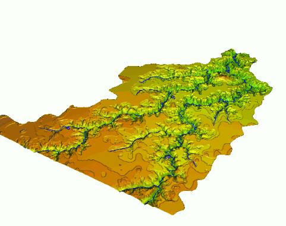

Dynamic spatial phenomena
Multitemporal Data Handling in TGRASS
Helena Mitasova, Anna Petrasova, Vaclav Petras
Learning objectives
- observation time series and multitemporal data
- dynamic simulations
- managing geospatial multitemporal data
- dynamic visualization
Observation time series and multitemporal data
Definitions:
- systematic, consistent monitoring: time series
- data collected over the same location but for different purpose
and/or using different technologies: multitemporal data
Observation time series and multitemporal data
Objectives:
- gain understanding of dynamics / change / evolution of studied phenomenon or system
- provide input for diagnostic or predictive modeling
Your observation data
Describe your time series or multitemporal data:
- source:
in situ point measurements, satellite, airborne/UAS imagery, polygon-based data ...
- spatial and temporal distribution, resolution, scale:
image(s) at regular time step, event-based acquisition, static points, moving objects,...
- management of your data:
spreadsheet, spatio-temporal database
- processing, analysis and visualization
Monitoring dynamic processes
- How fast do your variables change? Do your data capture the full dynamics?
- Is the process multiscale? Which temporal scale is captured by your data?
- what is driving the process dynamics - do you have data to capture the driving forces?
Modeling dynamics from observations
- continuous fields sampled by point data:
multivariate interpolation to convert discrete observations into continuous dynamic model
- classification, feature extraction, change detection and quantification
- statistical modeling to relate the observed data (predictors) to the studied process dynamics (response)
Dynamic models from multitemporal monitoring data: examples
Observation time series
Bi-variate interpolation of monthly precipitation from point data

Precipitation in South America
Observation multitemporal data
Multitemporal point clouds with variable point distribution, densities and accuracies

Data sources: digitized contours, photogrammetry mass points, lidar, GPS
Observation multitemporal data
Bi-variate interpolation of DEMs from point clouds to surfaces and dynamic visualization

Jockey's Ridge 1974 - 2017: southward migration, landform transformation
Multitemporal DEM 1974 - 2017
Multitemporal Planet imagery
Satellite imagery (3m res), September 2017 - July 2018
Planet: world’s largest constellation of Earth-imaging (micro) satellites providing daily observations
for entire Earth at 1m resolution
Observation multitemporal data
Bi-variate interpolation of DEMs from point clouds to surfaces

Cape Fear
Observation timeseries
- Chesapeake bay monthly nitrogen concentrations capture seasonal trends - sampling sites

Observation timeseries
- Chesapeake bay monthly nitrogen concentrations - multivariate (space-time) interpolation

Observation multitemporal data
groundwater pollution over 10 years - sampling sites

Observation multitemporal data
- groundwater pollution over 10 years - (space-time) interpolation of chemical concentrations data
- From scattered space-time point data to continuous space-time model of plume evolution
Dynamic models from simulations
Dynamic models from simulations
- Results of numerical modeling
- Well defined time step: depends on application, input data and numerical method

Managing time series and multitemporal data
Temporal data framework in GRASS
- designed for massive series of satellite imagery or modeling outputs
- supports efficient processing, management and analysis of space-time data sets
- space-time dataset is a set of maps registered in a temporal database
- individual maps represent the states of the dynamic system at a given time
Gebbert S., Pebesma E. 2014. A temporal GIS for field based environmental modeling. EMS 53, 1-12.
Gebbert S., Pebesma, E. 2017. The GRASS GIS temporal framework. IJGIS, pp. 1273-1292
Space-Time dataset types
- raster: strds
- vector (points, lines or areas): stvds
- 3D raster: str3ds

Time stamp type
Time stamp assigns time to an individual map in the space-time data set
- time instant - snapshot at given time:
2013-10-15 13:00:00 (absolute time)
- time interval - defined by start and end time: time period of a day, a month, or a year (relative time)
- example: a single UAS survey represents a snapshot (state) which can be agreggated into time intervals
Multitemporal data timeline
- Multitemporal DEM for Jockey's Ridge dunes:
- photogrammetry (1974-98),
- lidar (1999-2018),
- structure from motion from UAS imagery (2016-2018)


Temporal count and intersection
- Count: number of maps (temporal snapshots) where the given cell has non-null value
- Intersection: grid cells with non-null values from each map in time series

Basic multitemporal DEM analysis
Per cell statistics computed for each cell over time:
- mean and standard deviation
- min, max elevation and range
- time at minimum, time at maximum
- linear regression: slopem offset, regr. coefficient
Mitasova, H., Hardin, E., Overton, M., and Harmon, R.S., 2009, New spatial measures of terrain dynamics derived from time series of lidar data, Proc. 17th Int. Conf. Geoinformatics, Fairfax, VA.
Basic multitemporal DEM analysis: core, envelope
- Core surface: min. elevation measured for each cell
- Envelope: max. elevation measured for each cell
Basic time series analysis: regression
- applies to systematic monitoring with longer time series, with rate of change close to linear
- compute per cell linear regression analysis: map of regression slope and offset
Map algebra for time series
- apply map algebra expression for each map in the time series at each grid cell
- output is new time series which is registered as a new space-time dataset
- this is different (and much simpler) from temporal map algebra
Landform change: contours time series
Dune gradually split into smaller parabolic dunes:
i 16m and 20m contours capture change but are hard to read


Space-Time cube visualization
DEM time series is converted into space-time voxel model in TGRASS and evolution of a contour
is represented as isosurface: 16m and 20m


Summary
- we defined multitemporal data and time series
- we discussed temporal resolution and dynamic processes
- we explored examples of models from observation data
- we explored examples of models from numerical simulations
- we introduced GRASS GIS temporal framework